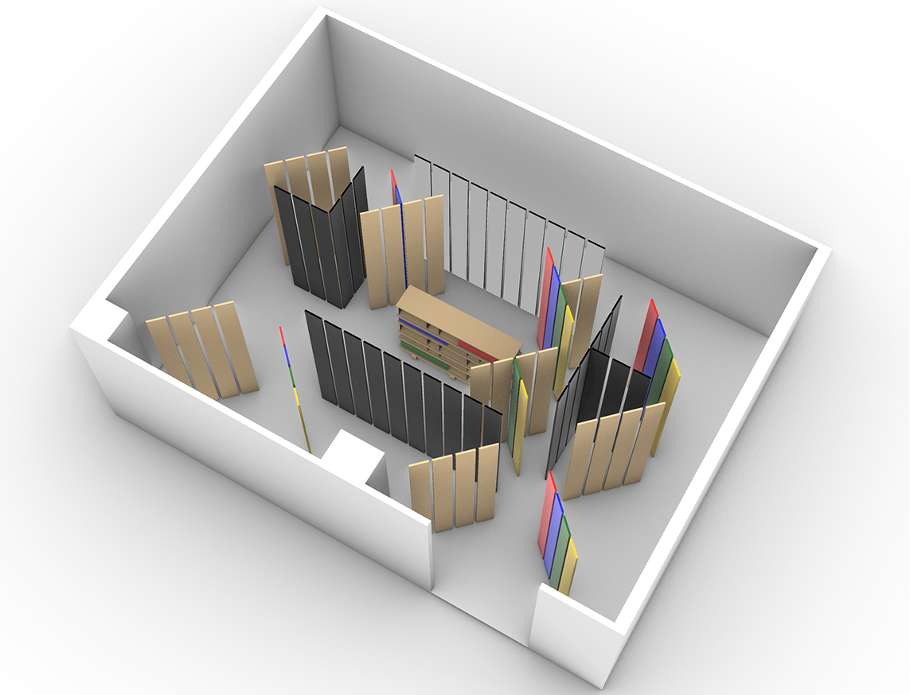
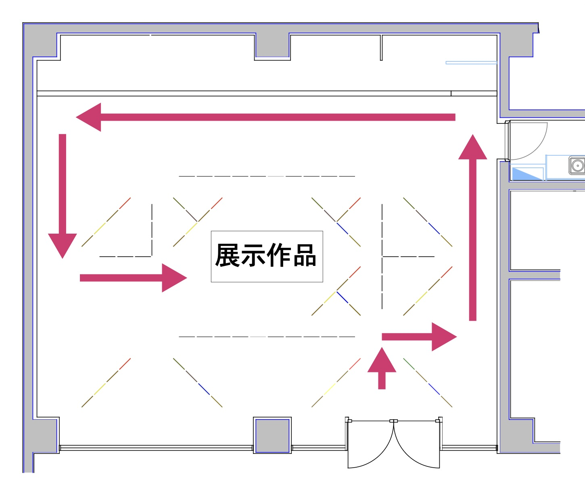
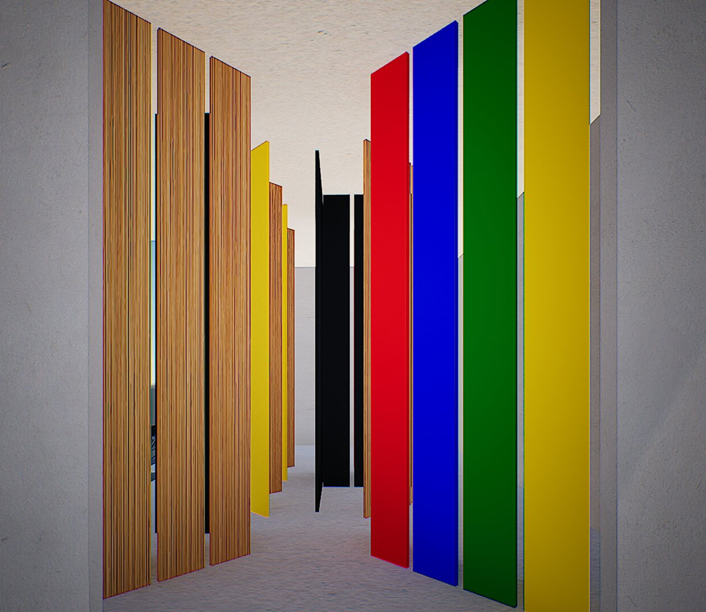
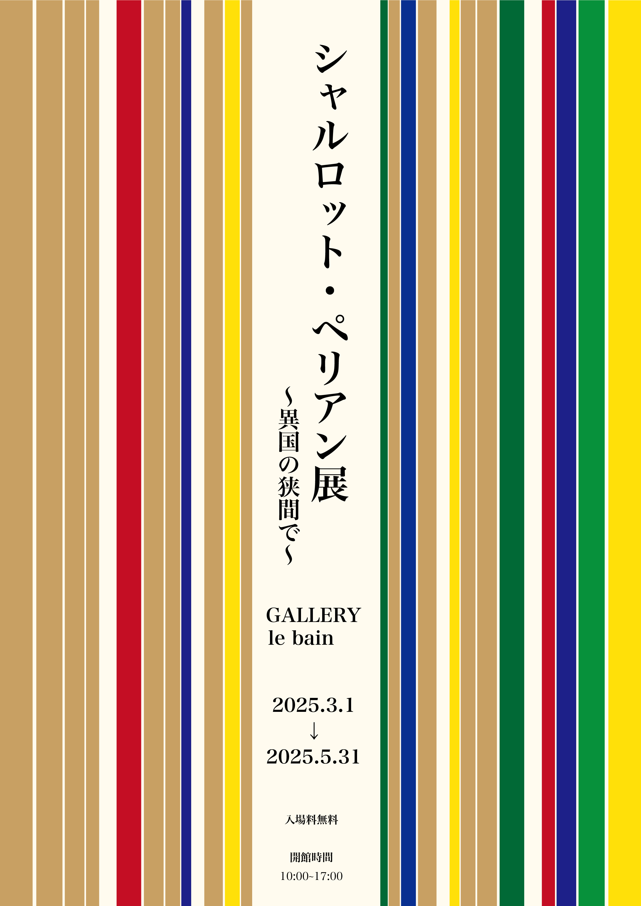

概要
この課題では、まず「どのような展覧会を行うか」を定め、その上で企画の趣旨に合った会場構成を考えることが求められていました。そこで、近代化やモダニズムの流れの中で日本でも活動したシャルロット・ペリアンに着目し、彼女の家具を展示する展覧会を計画しました。
会場では、単に作品を並べるのではなく、和と洋が雑然と混ざり合う空間を進み、その先で確固たる個性を持つ作品に出会うという体験をつくることを目指しました。展示作品には実際に触れたり使ったりできるようにし、一度に一人ずつ入場する構成とすることで、作品と静かに向き合える環境をつくっています。
背景
展示対象として選んだシャルロット・ペリアンは、1900年代に活躍したインテリアデザイナーであり、ル・コルビュジエらとともに多くの名作家具を生み出した人物です。1940年には坂倉準三の推薦で工芸指導顧問として来日し、日本各地を訪れています。フランスを出発点としながら、日本での経験を経て独自の存在感を深めていった彼女の歩みを、和と洋が混ざり合う空間体験として表現したいと考えました。
コンセプト
コンセプトは、「和と洋が雑然としている中を進み、最後に確固たる個性のある作品にたどり着く」というものです。和と洋を明快に分けて見せるのではなく、両者が混ざり合う状態の中を来場者が歩くことで、最終的に作品の持つ強さや独自性がより際立って感じられるように計画しました。
この構成は、フランスから日本へ渡り、その両方の文化と関わりながら自らの表現を築いていったシャルロット・ペリアン自身のあり方とも重ねています。
会場構成
会場では、さまざまな色や素材の板を斜めに配置し、和と洋が雑然と混ざり合う状態を空間全体で表現しました。竹材は「和」、色のついた木材は「洋」を示す要素として用い、さらにシャルロット・ペリアンの作品から着想した色を取り入れました。
また、一部には鏡面の板を用いており、空間の雑然とした印象を強めると同時に、来場者自身の姿が映り込むことで、鑑賞者もまた展示体験の中に入り込むような構成としました。
動線は、入口から奥へ進むにつれて、和と洋の混ざり合いを体験しながら、最後にひとつの展示作品へたどり着く流れとしています。



展示体験
会場には原則一人ずつ入場し、他の来場者と重ならないようにしています。また、展示作品は1作品のみを展示し、1週間ごとに入れ替える構成としました。一度に多くの情報を与えるのではなく、ひとつの作品と静かに向き合い、触れたり使ったりしながら、その存在感をじっくり味わえる展示体験を目指しています。
展覧会ポスター
